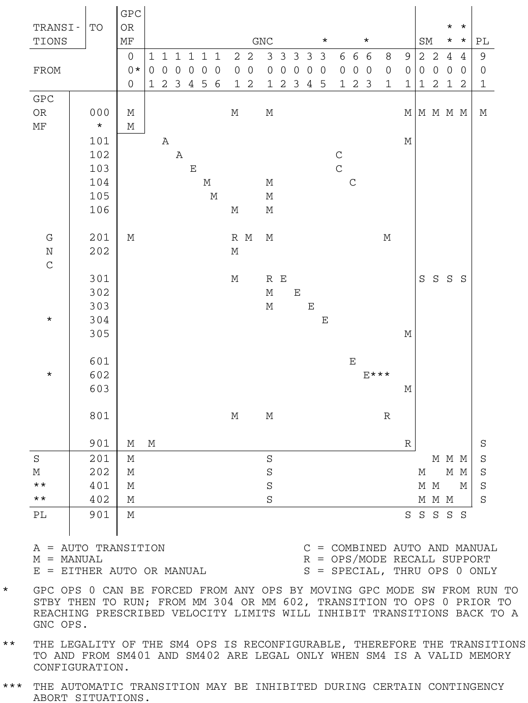
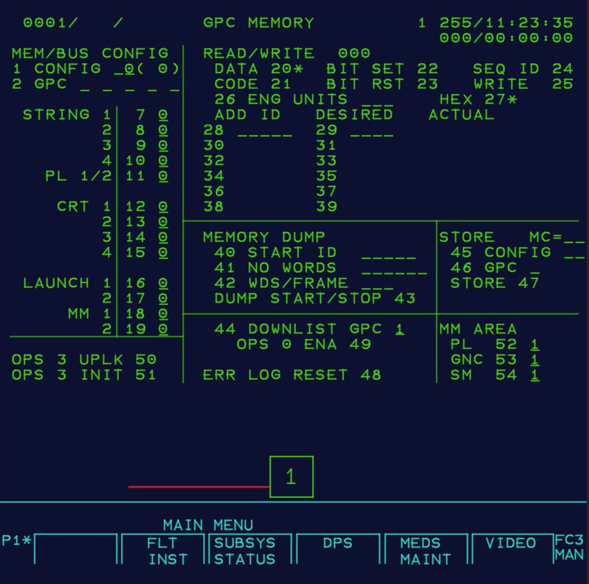

Our focus here will be OI-34.07, though as a longer-range
goal, we'd like to eventually extend our coverage to the other
versions as well.
What make it all as nightmarish as I claim? Here's the
synopsis:
So in order to get a working setup in which PASS can be run on a
modern computer, we need not only emulators for the GPC, the MMU,
and other peripheral devices in the spacecraft, but also need to
know how to compile PASS source code (i.e., which ordering and
which options), how to combine the object files into PHASES, and
how to get those PHASES onto tape in a format that the GPC can
correctly understand. And hope that any patches we're missing
aren't too important.
Before building any PASS source code, you need an appropriate setup for doing so. First, you'll need to have installed the development tools, i.e., the HAL/S compiler, the assembler, and so on. The first step is to locally clone the Virtual AGC software repository, if you have not done so already. This will give you a local directory called "virtualagc". Since I don't know where you will put this directory on your own computer system, I'll refer to it as virtualagc, and when you see this in the discussion below you'll just have to remember to use the path that's correct for your own computer system.
TBD
An important decision for you: Perhaps you just don't care about how to compile the flight software, or about building a "tape" from it, but just want to run it. If that's you, then you can simply skip all this dreadful, nerdy stuff and jump right down to the other dreadful, nerdy stuff.
Next, you'll need PASS source code. As has been discussed
in depressing detail elsewhere (TBD), this software is being
treated as restricted out of fear of legal repression — or in the
dreadful euphemism people are using at the time I'm writing this,
"in an abundance of caution" —, so if you qualify to get this
material, download it. It's a compressed git
repository. Unpack it, and you'll have a directory called
"PFS". Since I don't know where on your computer this
directory will be, I'll refer to it as PFS,
and when you see this in the discussion below you'll just have to
remember to use the path that's correct for your own computer
system.
Building PASS source code produces a lot of files that
are created by the compiler et al., so as a practical
measure you need to do your work in a scratch directory used only
for that purpose, which you won't feel bad about disposing of
later. (It's your computer, of course, so you can do what
you want.) I'll refer to this directory as scratch, and when you see
this in the discussion below you'll just have to remember to use
the path that's correct for your own computer system.
Depending on which PASS version you're going to build, you need
to make sure that the source code you need is accessible from scratch. Here's how we set
it up:
Finally, copy the following directories into your scratch/OI301700 or scratch/OI340600 or scratch/OI340700 directory:
This is a long process, but at the end you should see that the objects/ directory has been filled with object files.cd scratch/OI340700 # Or someday, OI340600 or OI301700
prepareTEMPLIB --clear
prepareINCLIB --clear --include=INCL80
mkdir SDFLIB # Or just clear the directory if it already exists.
mkdir objects # Or just clear the directory if it already exists. compilePASS
For OI-34.07 only, we have disassembly reports generated
from dumps of GPC memory back in the Shuttle era by a program
called MAFGEN. It is therefore possible to verify the
build process up to this point by comparing the linked memory
images created in the
preceding step with memory images extracted from those
disassembly reports. This verification process is, of course,
entirely optional, and isn't needed if you're just interested in
running PASS.
TBD
When we linked the
PASS software earlier, we produced images of the contents of
GPC memory for the various memory configurations (MC), or in
more-conventional terms, for the various "operational sequences"
(OPS) familiar to actual users of PASS.
TBD
In principle, it should be possible to load one of these memory
images into an AP-101S emulator and run it. In practice,
that's much more difficult than it sounds, because in actual use
one of these memory images will only be loaded after the
IPL process (or other software) has initialized the GPC and other
peripheral devices, and without that prior setup the memory image
cannot be run even if 100% correct. For example,
counter/timers need to be running, interrupt vectors need to be in
place and interrupts enabled, and so forth. There are other
issues as well, in that the GPC has memory-protection features,
and PASS software can be run only if (roughly speaking) all memory
containing code is "protected" and all data areas
are "unprotected". Any of these (and other) setups which
have not already been performed will cause PASS software to halt.
TBD
As I mentioned above, for the PASS software to be used in real
life, the GPC has to load it into memory from the Mass Memory Unit
(MMU). That was originally a tape drive, though it later
flights it was apparently a drop-in replacement using solid-state
memory instead, but we'll just continue to call the storage
mechanism a "tape".
Getting the built PASS software onto the tape is an adventure.
TBD
If everything above (other than the optional steps) has been done
correctly, it should now be possible to run PASS from the
tape! You will, however, have to understand a little bit
about the Initial Program Load (IPL) process, because it's not
automatic. And not fast, either. Why anyone would find
that acceptable in a flight-critical system in an object whizzing
through space, or possibly pointed toward the ground, at a high
rate of speed ... well, that's beyond my pay grade.
(Admittedly, everything is beyond my pay grade since I get
paid nothing for this, but you know what I mean.)
The minimal set of emulated equipment you'll need for an IPL is
fairly substantial:
Don't worry, if you've followed the setup instructions, all of
these things are available. Other combinations of
currently-existing emulated equipment are possible as well, but
won't be discussed here. These various emulations interact
via networking, as did the corresponding physical equipment in the
Shuttle itself. There, that network consisted of
MIL-STD-1553 buses, which are emulated via what's known as UDP
broadcasting.
Here's a basic IPL process we'll follow, though many variations
are possible. If you want to know more, the OI-32
PASS User's Guide has a more-extensive if still
abbreviated discussion.
Having reached OPS 000 (the "system sofware" or SSW), the
remainder of PASS is accessible via additional commands.
Although as I've mentioned so endlessly that it's probably
boring, for legal reasons we are afraid at present provide a full
copy of PASS on tape, so I've had an abridged tape prepared for
PASS OI-34.07 that includes only the IPL code and the following
major functions:
(Recall that GNC is for guidance & navigation, SM is for
system management, and PL stands for "payload" but is a misnomer
since it has nothing to do with the Shuttle's physical
payload.) Or in short, everything is provided on the
abridged tape except OPS 1/6 (Ascent / Return-to-launch-site) and
OPS 3 (Entry), so that you can't smash your simulation into
anything! Or to put it differently, so that you can't do
anything really interesting either. Still, it should give
you enough to play with, and I figure it's legally safe,
ITAR-wise.
We've provided a handy-dandy wrapper program (TBD) that
runs the simulation for you from the abridged tape:
TBD
Note: If you happen to have a different tape, such as the full OI-34.07, or OI-34.06, OI-30.17, or indeed something of your own devising, perhaps called MYTAPE.mmv, you could run it as follows:
In principle, it's even possible to directly run one of the memory-configuration images (SSW, G16, G2, G3, G8, G9, S2, P9) corresponding to the OPS directly, without ever going through the MMU "tape" or IPL process. This is trickier than it sounds, because the IPL process provides critical setups like memory protection, interrupt vectors, timer settings, and so forth, that aren't available otherwise. But we've tried to provide those to the extent that we can, so here are some commands you could try if you wanted:TBD ...
TBD ...
Let's look at the IPL process first, as it's a prerequisite to
everything else — after all, if you can't load a program, how are
you going to run it anyway? —, and yet it's ultimately the least
interesting thing. It's the equivalent of performing your morning
ablutions: a necessary preliminary to your day's activities, but
usually not something worthy of a "Dear Diary" entry.
Here's a video that shows going through an IPL process for GPC 1,
from power-up all the way to an OPS 000 menu screen. (It may play
in your browser, but if not, it'll hopefully let you download it
instead.)
Even from just the screen-capture above, you can tell that there
are a lot of seemingly-complicated controls, and a lot of them are
actually used in the IPL process! At the left is the
emulated display screen (MEDS) itself, while at the right is the
keyboard that's associated with the MEDS, and in the middle there
are a lot of Shuttle control-panel switches. How do we know what
to do with the keyboard and all of those switches? The PASS
User's Guide (OI-32) goes through it step-by-step, as well
as providing some extra explanation of what's going on behind the
scenes, so I won't waste my or your time by rehashing something
you could read just as easily there as here. I will comment
that a few of the steps in the PASS User's Guide are unnecessary
in the simulation, and I haven't bothered to supply controls for
them. For example, Step #1 in the published procedure is to
apply power to MMU1 and MMU2, but in the simulation they're just
always "on", and I haven't bothered to provide any fake power
switches for them that you can pretend to click. (But I
don't present I'm consistent on this matter: the simulated GPC
POWER switches are fake and are just provided for
pretending.) The only place in the published procedure where
you have a real option is at Step #12, in which you can choose
which "area" into which the software downloaded from the MMU is
supposed to be loaded; choose any of 1, 3, or 5, since areas 2 and
4 are for loading BFS, which we don't have.
The worst thing about the process, other than the need to hit all
those switches in the right order, at the right time instead of
having it proceed automatically, is that you'll notice the video
is 80 seconds long, and you've got 5 GPCs to deal with, so you're
looking at 400 seconds to IPL all of them unless you have buddies
helping you.
But enough grousing! What you get at the end of the process
is a menu screen entitled "GPC MEMORY", which is actually the
entry screen for OPS 000, as promised. That's your entrée to
the rest of PASS.
Before proceeding, there are a few
general things worth knowing. PASS software is partitioned
into up to 10 Memory Configurations (MC) or Operational
Sequences (OPS), which as far as I can tell are essentially
the same things, although a purist can probably tell me some
difference between them which at that instant seems significant to
whoever is doing the telling. These are are identified in a number
of confusing ways by/for particular audiences:whereOPS O 0 N PRO
O0N is the MM's
3-digit number as in the diagram. For example, if you were in
MM 901 (in OI-34.07, "TBD") and wanted to transition to MM 201 (in
OI-34.07, "UNIV PNTR"), you'd use the command "OPS 201 PRO".
But if you try to jump around at random from MM to MM, you'll quickly get into trouble because not all transitions from MM to MM are allowed. In the diagram to the right, for example, you see the allowed transitions in OI-32. (Again: Are the identical transitions allowed in OI-34? Don't ask me!) And indeed, if you look at the table in relation to the example I gave earlier, of transitioning from MM 901 to MM 201, you'll see that in fact it is not legal: From MM 901, you can only transition to MM 000, so if you want to get from MM 901 to MM 201, you'd have to do something likeBut that brings up another point, which is that this involves transitioning from OPS 9 to OPS 0 and then to OPS 2. You may recall that I equated each OPS to a "memory configuration" (MC). That's because there's too much PASS software to fit into GPC memory at any given time, so when you transition from one OPS to another it requires downloading the MC for the desired OPS from the MMU (or from a cache in another GPC) and replacing the MC already loaded into the GPC. So if you wanted to go from MM 901 to MM 201, you'd find that the GPC first downloaded the MC for OPS 0 (which happens also to be MC 0), and then a little while later download the MC for OPS 2 (namely MC 2).OPS 0 0 0 PRO
OPS 2 0 1 PRO
LMN,
the keyboard command would beSPEC L M N PRO

The available specialized screens tend to vary according to the current OPS, although some are available in most or all OPS:SPEC 0 PRO — The "GPC MEMORY" screen, as in the
illustration at the right. TBD SPEC 1 PRO — The "DPS UTILITY" screen. TBDSPEC 2 PRO (not in OPS 1, 3, 6) — The "TIME"
screen. TBDSPEC 6 PRO — The "GPC / BUS STATUS" screen. TBDSPEC 9 9 PRO — The "FAULT SUMMARY" screen, which
allows you to see a list of the logged faults. You can also
quickly get to this screen via the keyboard's FAULT SUMM
button.But that's only scratching the surface: There are lots of
specialized screens, and to learn more about them you'll have to
consult the Shuttle-era documentation. I'd suggest the PASS User's
Guide OI-32.
whereITEM N + V EXEC
N is the option number and V
is the new value. For example, you see from "46 GPC _"
that for the "STORE" function, GPC has no default value. To
change it to GPC 3, the command would beNext to some items, like "DATA 20" for the READ/WRITE function, there is no underlined area. That means it's a toggle, with an asterisk ("*") next to it if enabled or selected, but no asterisk if disabled or not selected. The command to toggle it is justITEM 4 6 + 3 EXEC
or more generally, "ITEM 2 0 EXEC
ITEM N EXEC".If that wasn't enough for you already, perhaps you might want to
have yourself checked out. In the words of the immortal J,
"Not to change the subject or anything, but when was the last time
you got a CAT scan?" Nevertheless, we'll proceed with our
little excursion into PASS-land, on the assumption that you're
healthy enough to tolerate it.
As you recall, the Shuttle's Data Processing System (DPS) doesn't
merely have 5 GPCs, it expects 4 of those GPCs to operate
in a redundant configuration during critical flight phases —
Ascent, Return To Launch Site (RTLS), Entry, or in other words, in
OPS 1, 6, 3 —, during which they are executing identical software,
processing hopefully-identical input data, and outputting
hopefully-identical commands as well. The technique involved
is that each of the 4 GPCs continually evaluates data from the
other 3, and then they vote on whether they think the each of the
others are working properly.
Aside: Here's a heads-up on the computer resources you need to run the simulation in this form. Roughly speaking, to run a simulation using N GPCs, with N being 5 or less, you'll want at least N+1 cores. That's not to say that you couldn't get by with less in a pinch, but on my computer (which is new as of August 2026, and chosen to be as fast as possible at that time, consistent with what I think is a reasonable budget), each GPC takes about 80% of a core. These things will only get faster in the future, of course — knock wood! —, but I'm just saying that your experience may be less satisfactory on an older machine. The memory resources for the simulation are meager, around 30MB, and shouldn't concern anyone. But why is so much CPU needed to simulate such an old, slow computer system? I really can't point to any one factor. We've uncovered no obvious culprits so far. The need to insure synchronization between the GPCs and between the GPCs and the MEDS form some pretty hard constraints on what we can try, since a couple of hundred microseconds discrepancy here or there is enough to destroy synchronization.
In point of fact, the redundancy checks occur any time two or
more of the GPCs are running the same OPS, so we don't actually
have to be in OPS 1, 6, or 3 to observe the effect. And in
truth, there's very little to see, insofar as redundancy is
concerned. Basically, the control panel has a 5×5 array of
indicator lamps, called the Computer Annunciation Matrix (CAM), in
which you can see what all of the GPC votes are. So when it's
working properly, all there is to see is a CAM array with none of
its lamps lit.
In the video below, you see me IPL'ing a simulation in which
there are 4 GPCs and 2 displays ... or rather, trying to do so,
because I make a number of dumb mistakes that I never notice,
eventually causing the GPCs to fall out of sync several minutes
later when I reach the end of the process. It takes me nearly 9
minutes for the whole thing, but it's the first time I had tried
it, so undoubtedly some training (or practice!) would make it go
much faster. I've left the mistakes in the video, because I
had been worrying about how to demonstrate a redundancy failure to
you, and I managed to achieve a video that demos it purely by
accident.  The correct
instructions are on the left, and I'll let it as a where's-waldo
exercise for the reader to find the six (or more?) ways I screwed
it up.
The correct
instructions are on the left, and I'll let it as a where's-waldo
exercise for the reader to find the six (or more?) ways I screwed
it up.
|
||||||||||||||||||||||||||||||||||||||||||||||||||||||||||||||||||||||||||||||||||||||||||||||||||||||||||||||||||||||||||||||||||||||||||||||||||||||||||||||||||||||||||||||||||||||||||||||||||||||||||||||||||||||||||||||||||||||||||||||||||||